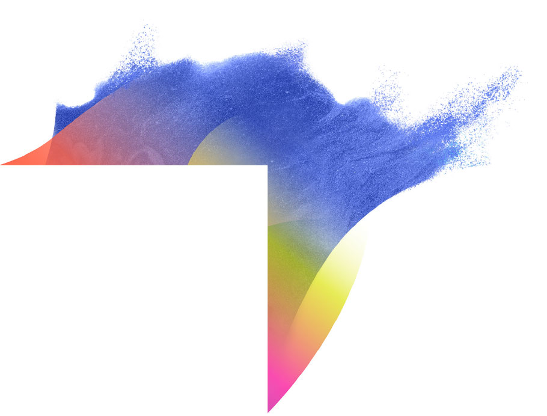

This toolkit guides you through the Girl Effect 10 step process for creating new brands and evolving existing ones.
Inform
Girl Effect exists to create a new normal for girls by increasing their value, voice and connection in society.
Insights from research informs our brand strategy in-country. This step outlines what research Girl Effect does when entering a new geography and the tools to guide you.
Design
The insights gathered from research inform your brand strategy. This step guides you on the decision making process to developing your brand strategy and content focal areas.
This is a creative stage following on from the brand strategy. This step will guide you on how to create your brand’s visual identity – name, look, feel and tone.
In reality, activity to develop the operational model begins at step 2, running in parallel to all other activity. This step outlines key considerations for developing an operational model and tips for getting it right.
Create
Before launching a brand, it is important to first test the concept in a ‘real-life setting’ to ensure the creative concept and media format work as imagined. Learn how to in this step.
Content is Queen. And Girl Effect brands have a proud reputation for strong content. Learn all about creating and producing content on-brand in this step.
Without a measurement framework you’ll have no way of knowing if you’re brand is on the right track. Find out how to develop and use a measurement framework here.
Live
Whether it is year 1 or year 5 of your brand, promotion is essential. Tools, ideas and inspiration can be found here.
Data and insights from brand measurement research will help you understand how best to evolve your brand to make sure it is future proof. This step will help you do this.
* The role of voice, value and connection for our brands:
Value: Girls and others hold positive value about girls.
Voice: Girls have the confidence to speak and be heard.
Connection: Girls and others believe it is important for girls to have positive relationships.